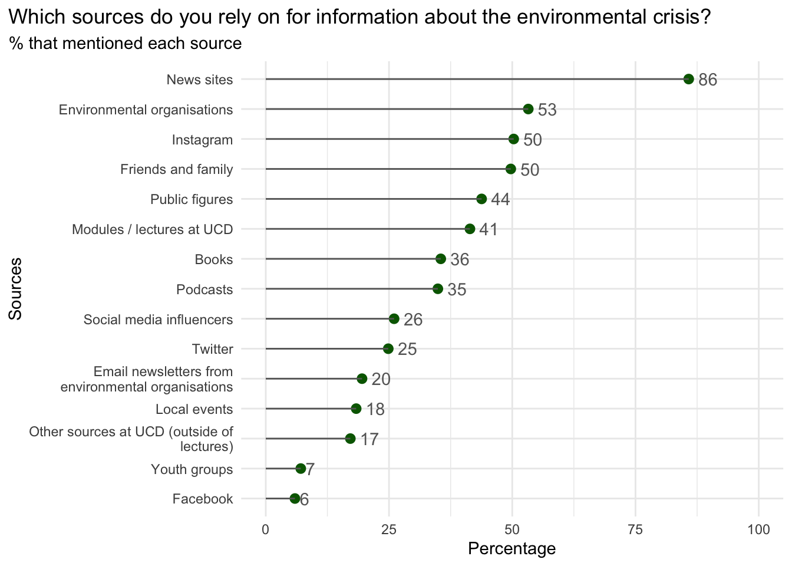
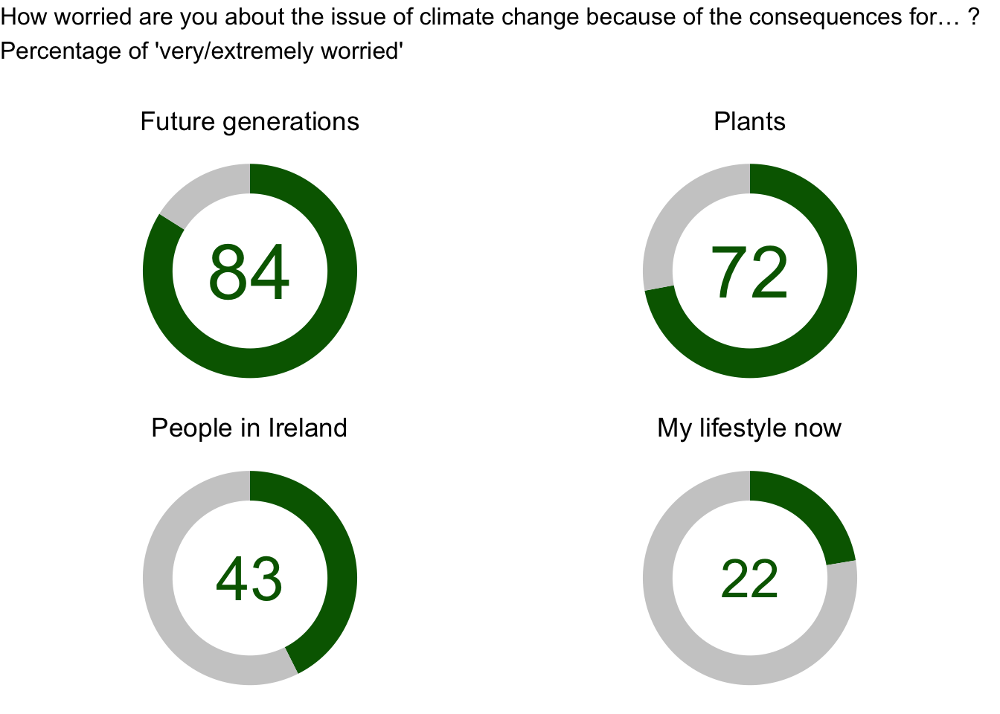
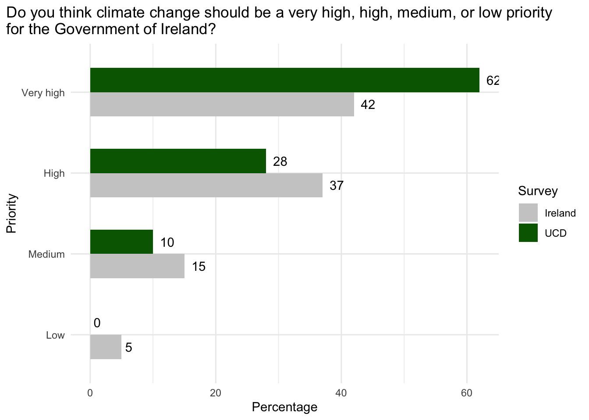

Results
The questionnaire was divided into four main sections: Knowledge, Anxiety, Action and UCD. In this report, we focus on the results about the UCD questions and the responses from students of the College of Social Sciences and Law (CoSSL). The authors are preparing different papers analysing the data generated by the other sections of the questionnaire.
Knowledge
General knowledge
When asked about how much they know in relation to climate change 92% of students indicate that they know a lot or a moderate amount about it. This percentage is lower among students from the CoSSL (88%).
Specific knowledge
Based on questions developed by the OECD 1, students were asked to what extent they could explain some issues related to climate change. Among all issues, UCD students find the easiest to explain why some countries suffer more from global climate change than others, with 81% stating that they could do this easily or, at least, with some effort. This aspect is also mentioned as one of the easiest for 15-year-old participants of the OECD assessment across 66 countries, with a similar proportion of 72% on average. On the other hand, the hardest aspect to explain according to UCD students is how economic crises in single countries affect the global economy, with only half of the respondents indicating that they could do this easily or with a bit of effort.
There are also significant differences across colleges. Only 68% of CoSSL students indicate that they can explain how carbon dioxide emissions affect global climate change compared to 90% of their colleagues from other colleges. Conversely, 83% of CoSSL can Discuss the different reasons why people become refugees and only 69% of respondents from other colleges can do that easily or with some effort.
Information sources
The most cited source of information about the environmental crisis that UCD respondents rely on is News Sites (86%) followed by Environmental organisations (53%) and Instagram (50%). The least cited sources are Facebook (6%) and Youth groups (7%). Located also at the bottom of the ranking, only 17% of students mentioned that they rely on information from other sources at UCD (outside of lectures), with 41% of them relying on information from modules/lectures in UCD.

Anxiety
When asked how often they think about climate change, 78% of respondents say that they think about it at least every week, with 20% thinking about climate change every day or multiple times a day. The groups that present the highest proportion of thinking about it daily are female students (23%) and those coming from rural areas (24%). In addition, half of the respondents indicated that they are very or extremely worried about climate change. These levels are also higher among female students (57%) and CoSSL students 53%.
To investigate this worry in more detail, researchers asked participants to what extent they were worried because of the consequences of climate change to determined groups. 84% of respondents indicated that they were very or extremely worried about the consequences to Future generations and only 22% stated that they were very/extremely worried about the consequences to their lifestyles now.

The proportion of very/extremely worried students is higher in the CoSSL compared to other colleges for all groups. The highest difference is found in consequences for My future and for Plants whereas the lowest difference is found in consequences for People in my community and for My lifestyle now.
Action
UCD students were also asked to what extent some groups should be acting more or less to address climate change. For 79% of the students, “Business” should be acting much more to address climate change. This is the highest proportion followed by “Government” (78%) and “Politicians” (71%). Only 36% of respondents indicated that “Citizens” should act much more and 19% responded that “themselves” should be acting much more to address climate change.
This emphasis on Government’s responsibility corroborates the results from a national survey conducted in 2021 with the Irish adult population 2. One of the survey items asked if climate change should be a very high, high, medium, or low priority for the Government of Ireland. Among the population, 42% indicated a very high priority, and 37% responded that a high priority should be given. The same question was asked to UCD students, with 62% indicating a very high priority and 28% a high priority.

Both surveys also asked when climate change will start to harm people in Ireland. Results from the national survey showed that 47% of the population believes that climate change is already starting to harm people in Ireland. 22% responded in 10 years, 29% in 25 years or more and 2% said that climate change will never harm people in Ireland. The same question was asked to UCD students with 56% saying that people are already being harmed now, 27% responding in 10 years and 1% saying that climate change will never harm people in Ireland.
Finally, in relation to climate-friendly actions that UCD students have taken in the previous 12 months, 71% mentioned “Talked with family and friends about climate change”. This is the most cited action followed by “Punished a company by NOT buying their products because of their contribution to climate change” (54%) and “Reduced your meat and/or dairy intake for environmental reasons” (53%). Some actions have different levels of support across students from the CoSSL and other colleges as indicated in Table 1.
| Table 1. Climate-friendly actions that UCD students have taken in the previous 12 months | ||
| Action | CoSSL | Other colleges |
|---|---|---|
| Reduced your meat and/or dairy intake for environmental reasons | 60 | 47 |
| Personally engaged in non-violent civil disobedience (e.g., sit-ins, blockades,climate march) | 26 | 13 |
| Voted for a green or climate-friendly political party | 22 | 20 |
| Volunteered your time to an organization working on climate change | 10 | 14 |
| Chosen a sustainability or climate-related career | 7 | 18 |
| None of the above | 4 | 6 |
| Met with, wrote letters, emailed, or phoned government officials about climate change | 3 | 6 |
| Applied to a sustainability or climate-related master programme | 1 | 7 |
UCD
Opportunities to Learn
Less than half of the students participating in the survey (43%) said that there have been enough opportunities to learn about climate change and environment-related issues in their experience in UCD. This proportion is similar among students from CoSSL (44%) and other colleges (42%).
The proportion of female students who indicated that UCD provided enough opportunities to learn about climate change is significantly lower (38%), compared to non-female students (51%).
Pro-Environmental Activities
Only 1 in 3 students in UCD indicated that there have been enough opportunities to become involved in activities (such as volunteering) related to climate change and environment.
The percentage of students from CoSSL who declared having those opportunities is lower (29%) than those from other colleges (36%).
In the same way that was observed for learning opportunities, the proportion of respondents who said that UCD provided opportunities to act is lower among female students (28%), compared to non-female students (41%).
Barriers to Climate-Friendly Action and Lifestyle Changes
The survey also asked participants what barriers students in UCD face to take climate-friendly action and lifestyle changes. The most cited barrier is that “Most students have other more pressing problems that take most of their attention e.g. course work”, mentioned by 70% of the students, 64% among CoSSL and 68% among female students.
The other top cited barriers are “Most students don’t have enough knowledge on climate change” (55%) and “Most students don’t have the skills e.g. public speaking / organising” (46%)
Opportunities for Further Learning
Finally, participants also indicated several topics related to climate change that they would like to learn more about at UCD. The table below indicates the percentage of participants that mentioned each of the topics.
| Table 2. Topics that students would like to learn more about | ||
| Topic | Percentage | |
|---|---|---|
| Sustainable food options | 55 | |
| Fast fashion/sustainable fashion | 54 | |
| The role of businesses and corporations in climate change | 53 | |
| Sustainable buildings | 52 | |
| How to take action on climate change | 50 | |
| Politics and policy around climate change | 48 | |
| Protecting biodiversity | 47 | |
| Reducing your plastic waste | 43 | |
| Climate justice | 40 | |
| Lobbying the government about climate-friendly action and lifestyle changes | 37 | |
| Gardening and growing | 34 | |
| Circular economy | 29 | |
Footnotes
OECD. PISA 2018 Results (Volume VI): Are Students Ready to Thrive in an Interconnected World? PISA. OECD, 2020. https://doi.org/10.1787/d5f68679-en.↩︎
Leiserowitz, A, J Carman, S Rosenthal, L Neyens, J Marlon, M Desmond, S Smith, MF Rochford, J O’Mahony, and L Reaper. “Climate Change in the Irish Mind.” New Haven: Yale Program on Climate Change Communication, 2021. https://www.epa.ie/publications/monitoring–assessment/climate-change/EPA-Climate-in-the-Irish-Mind-REPORT-19.pdf.↩︎